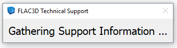
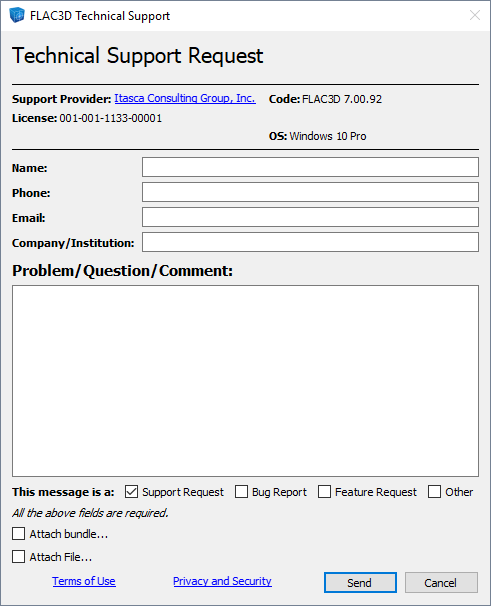

请求技术支持…对话框
如果用户有可用的互联网连接，则可在程序内直接访问技术支持。
使用程序菜单选择。该过程首先收集用户许可信息：

完成后，将显示技术支持对话框：

此对话框会自动填入有用的信息，包括许可编号、操作系统、程序的完整版本号，以及负责提供技术支持的业务办公室/代理的名称——该名称本身是一个链接，指向提供该办公室完整联系信息的另一个对话框。
“姓名”“电话”“电子邮件”和“公司”字段为必填项。对话框使用过一次后，此信息将保留在当前计算机用户配置文件中，并在下次使用该对话框时自动填入。
“问题/疑问/意见”字段用于描述问题。该字段（就此而言，整个对话框）可以扩展，以容纳任意长度的输入。
最后一个必填字段是指示通信类型的复选框。注意此处可以选中多个选项，但至少必须选中一个。
可选字段
必填字段下方有两个选项，可用于附加项目打包文件或用户系统中的特定文件。虽然并非必需，但强烈建议技术支持请求包含打包文件。虽然对于功能请求而言关系不大，但在请求支持时、尤其是在报告缺陷时，打包文件将为技术支持提供方提供重现用户问题的最佳手段。
工作原理
填写完对话框后，按下“发送”会将对话框内容通过电子邮件发送到对话框顶部指定的技术支持提供方。此外，在几秒到最多几分钟内，用户会收到一封确认其支持请求的自动电子邮件。该确认邮件包含对话框中所含信息的副本。如果未收到回执，用户可直接联系支持提供方（如上所述，可通过单击支持提供方名称上的链接获取联系信息）。
故障排除
此对话框需要互联网连接，以便从对话框中发送支持请求电子邮件。如有可能，在此处包含“无互联网连接”错误的图片。
| 这些内容对您有帮助吗？… | FLAC3D © 2019, Itasca | 原文更新于 2020 年 10 月 8 日 |
| 版权与免责声明 | ||